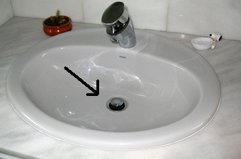
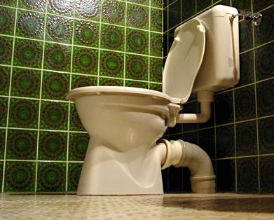
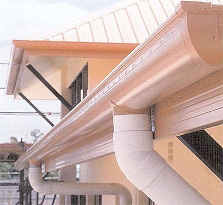
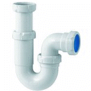
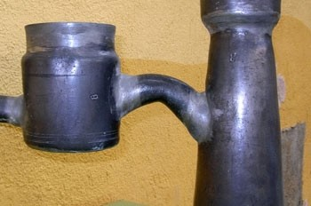
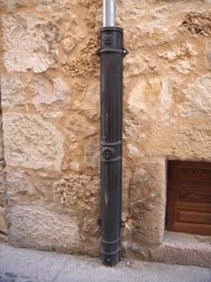
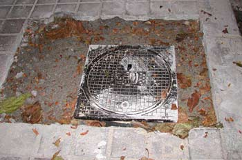
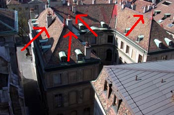

|
Los desagües de los distintos aparatos. Normalmente las tuberías de desagüe tienen un diámetro de 4 cm (5 cm en el caso de bañeras y duchas). |
 |
El manguetón, que es un desagüe especial para el inodoro. La tubería es más grande
de 11 cm de diámetro.
Fuente de la imagen:
http://4.bp.blogspot.com/) |
 |
|
Los canalones se colocan a lo largo de los tejados para recoger el agua de lluvia.
(Fuente de la imagen: http://img.archiexpo.es/i) |

|
Los sifones, cuya función es evitar que salgan malos olores de las tuberías.
Fuente de la imagen: http://4.bp.blogspot.com/ |

|
|
En los baños, en lugar de que cada aparato tenga su sifón, todos los desagües (menos el del inodoro) suelen enviarse a un bote sifónico, que tiene la misma función que el sifón. |
 |
Los bajantes es la tubería que baja el agua de los desagües hasta el nivel del suelo.
Se conoce vulgarmente como cañería.
Bajantes de pluviales: están por fuera de los edificios para
recoger el agua de lluvia. |

|
|
Las arquetas van bajo tierra y se ponen al pie de las bajantes para recoger el agua de éstas. Se ponen también donde se unen tuberías que vayan bajo tierra. |
 |
Bajantes de fecales: están por dentro
de los edificios para recoger el agua de los cuartos húmedos
(cocinas y baños). Se airean por el tejado de las viviendas,
donde suelen taparse con “sombreros” o falsas chimeneas. |
 |
|
Los colectores son las tuberías horizontales que van enterradas y que trasladan el agua de las viviendas hasta el alcantarillado público.
Los
pozos de registro son unas arquetas más grandes
donde se conectan los colectores con la red de
alcantarillado público.
Del alcantarillado el agua pasa a una depuradora antes de verterse al mar o a los ríos.
En viviendas alejadas del alcantarillado público, el punto final de la instalación es un pozo séptico. El pozo séptico hay que vaciarlo cada vez que se llena. |